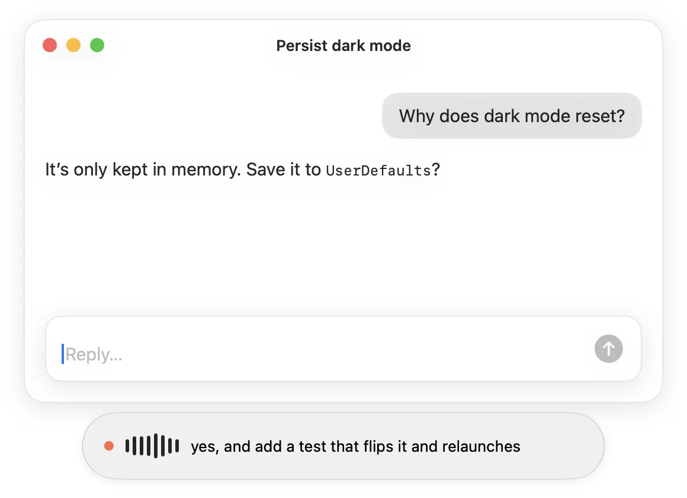
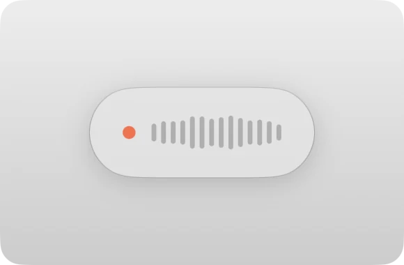
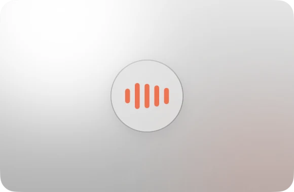
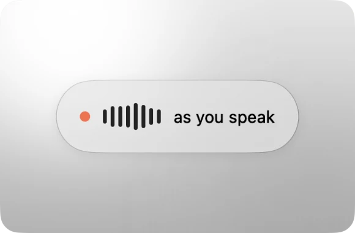
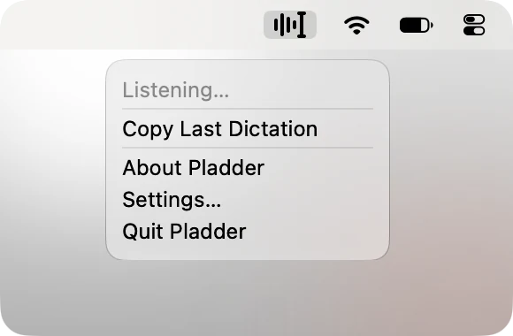

Talk to your agents.
Pladder is push-to-talk dictation for Mac. Hold a key, say the prompt, let go, and it’s in T3 Code, Claude or Codex in 0.2 seconds. Free, and nothing you say leaves your Mac.
Hold option space to talk, tap V to send.

Pasted the moment you let go.
No spinning wheel, no upload. Pladder transcribes while you are still talking, so the wait after you let go is the same for one sentence or five minutes.
- Median time from letting go to text on screen, over real dictations on an M1, the oldest Mac Pladder runs on.
- 0.195 s
Five minutes of talking still paste in 0.261 s. Read the benchmark.
Say the detailed prompt, not the lazy one.
Talking is three to four times faster than typing, so you give your agent the context it needs. It works wherever there’s a cursor: email, messages, notes, the terminal.
Typed
fix dark mode bug
Said
“The dark mode toggle in settings forgets its state after a restart. Save it, load it on launch, and add a test that flips it and relaunches.”
- Tap V before you let go
- Pladder pastes the prompt and presses Return, so it’s sent. Same hand, no reaching.
clode codebecomes Claude Code- A dictionary fixes the names speech models trip over: tools, libraries, your project’s jargon.
- No more “um”
- Filler words are dropped before the text is pasted.
- Learns your names
- Fix a word once and Pladder offers to remember it.
Nothing you say leaves your Mac.
Your voice becomes text on the Neural Engine, not on someone else’s server. What you say about your code, your clients or your weekend stays with you.
- Works with Wi-Fi off, after a one-time download of the speech model.
- The microphone is on only while you dictate: while you hold the key, or until you tap it again hands-free.
- No account, no analytics, no update check.
Free, where others charge by the month.
The popular dictation apps are subscriptions. Pladder is free, open source, and never sends your voice anywhere.
| Pladder | Wispr Flow | Superwhisper | |
|---|---|---|---|
| Price | Free. No subscription. | $15 a month for Pro | $8.49 a month for Pro |
| Free plan limits | None. The best model is included. | Weekly word cap | Whisper models only. Parakeet needs Pro. |
| Speed | 0.2 s, measured in public | No public benchmark to rerun | No public benchmark to rerun |
| Where your voice goes | Nowhere. It stays on your Mac. | To their cloud servers | Your Mac, or the cloud with Pro cloud models |
Pro prices as listed on Wispr Flow’s pricing page and Superwhisper’s plans page in November 2026, billed monthly. Yearly plans cost less per month, and Superwhisper also sells a lifetime license. Check their sites for current terms.
Four ways to show it’s listening.
A small Liquid Glass pill just above the Dock. Keep it compact, shrink it to a dot, watch your words appear live, or leave it all to the menu bar.

Compact 
Minimal 
Live 
Menu bar only
Questions
Which apps does it work with?
Anything with a text field: T3 Code, Claude, Codex, Claude Code, Cursor, ChatGPT, your terminal, Mail, Messages, Notes. If you can type there, you can talk there.
Will it run on my Mac, and in my language?
Any Mac with an Apple chip, M1 or newer, on macOS 26 or later; the benchmarks are taken on an M1, so every newer chip is faster. It understands the 25 European languages of Parakeet, among them English, German, French, Spanish, Italian, Portuguese, Dutch, Polish and Ukrainian, and detects the language as you speak.
Option+Space is already my Alfred or Raycast shortcut. What now?
Record another key in Settings, General, Keyboard Shortcuts: any combination works, a single key such as Right Command too. Option+Space is only the default because no macOS shortcut owns it.
Why does Pladder ask for Accessibility?
To paste for you: macOS lets an app press ⌘V in another app only with Accessibility. Without it, Pladder still works and leaves the text on the clipboard for you to paste. To learn your corrections it reads only the words it pasted and a little around them, and keeps nothing.
Talk is cheap. Pladder is free.
No trial, no subscription, no account.
Download for MacFor Macs with an Apple chip on macOS 26 or later. Always the latest release: see what’s new, check its SHA-256, or build it from source.